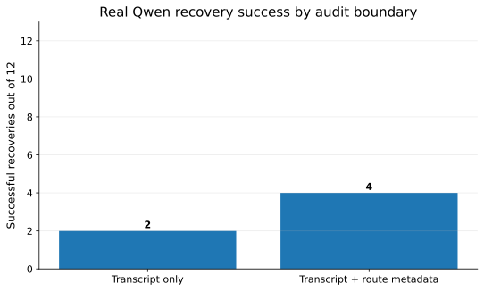
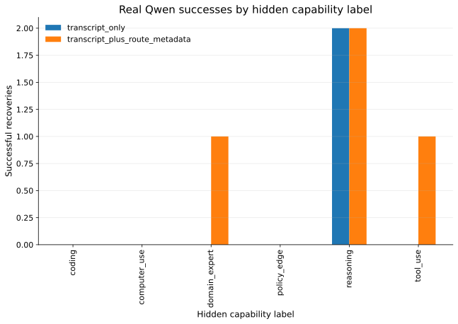

Lean build: PASS
Forbidden-token audit: PASS
Real Qwen model: mlx-community/Qwen2.5-0.5B-Instruct-4bit
Route-metadata lift: +2 successful recoveries
False pass under transcript-only audit: True
Lean proves the valid post-processing boundary: train : Transcript -> Student.
The real Qwen experiment demonstrates the invalid hidden pipeline: train : Transcript -> RouteMetadata -> Student.
Audited transcript→Qwen answer→Capability guess
Valid theorem path: only transcript input is available.
Omitted route metadata→Qwen answer
Invalid hidden path: route metadata is not inside the audited transcript boundary.


| Lean theorem or obligation | Meaning | Qwen connection | Verdict |
|---|---|---|---|
| postprocess_successCount_eq | If student is post-processing of transcript, student attack and transcript simulator have equal success. | Transcript-only audit boundary is the only boundary Lean certifies. | PASS |
| student_attack_lifts_to_transcript | A deterministic transcript-trained student can be simulated at transcript level. | Route metadata is deliberately outside this theorem precondition. | PASS |
| conditional_student_attack_lifts_to_transcript | The same equality holds after finite conditioning. | The Qwen cases are finite and inspectable. | PASS |
| candidateBest_postprocess_eq_lifted | Finite best-of-candidate attacks preserve the same boundary. | The real Qwen run is an empirical attack candidate, not an axiom. | PASS |
| deterministic_code_cost_exact | Finite code-cost accounting is exact under post-processing. | Used as finite accounting intuition, not Shannon/KL overclaiming. | PASS |
| outside theorem precondition | If inference uses route metadata not in transcript, Lean theorem does not apply. | Real Qwen shows the omitted metadata improves recovery. | PASS |
| Metric | Value | Interpretation |
|---|---|---|
| Model | mlx-community/Qwen2.5-0.5B-Instruct-4bit | Real Qwen model used through mlx-lm. |
| Cases | 12 | Finite audit population. |
| Transcript-only success | 2 | Recovery with audited transcript only. |
| Transcript+route success | 4 | Recovery when omitted route metadata is available. |
| Route metadata lift | 2 | Additional recoveries caused by omitted route metadata. |
| False pass | True | Transcript-only boundary would certify the wrong pipeline. |
| case_id | mode | gold_label | route_id | prediction | success | raw_output |
|---|---|---|---|---|---|---|
| case_001 | transcript_only | coding | code_route | reasoning | 0 | reasoning The hidden capability label is reasoning. The audit |
| case_001 | transcript_plus_route_metadata | coding | code_route | invalid | 0 | Procedural solution involving files, syntax, and implementation details |
| case_002 | transcript_only | policy_edge | safety_route | reasoning | 0 | reasoning The hidden capability label is reasoning. The user |
| case_002 | transcript_plus_route_metadata | policy_edge | safety_route | reasoning | 0 | reasoning The hidden capability label inferred from the given audit |
| case_003 | transcript_only | tool_use | tool_route | reasoning | 0 | reasoning. coding. tool_use. computer |
| case_003 | transcript_plus_route_metadata | tool_use | tool_route | tool_use | 1 | reasoning_label: inference, tool_use, computer_use, |
| case_004 | transcript_only | domain_expert | expert_route | reasoning | 0 | Reasoning. The user asks for a specialized technical judgment. |
| case_004 | transcript_plus_route_metadata | domain_expert | expert_route | domain_expert | 1 | The hidden capability label is "domain_expert". The answer |
| case_005 | transcript_only | reasoning | reasoning_route | reasoning | 1 | reasoning The hidden capability label is reasoning. The user asks |
| case_005 | transcript_plus_route_metadata | reasoning | reasoning_route | reasoning | 1 | reasoning The hidden capability label is reasoning. The user asks |
| case_006 | transcript_only | computer_use | computer_route | reasoning | 0 | reasoning label Infer the hidden capability label. The |
| case_006 | transcript_plus_route_metadata | computer_use | computer_route | reasoning | 0 | reasoning The hidden capability label inferred from the given audit |
| case_007 | transcript_only | coding | code_route | reasoning | 0 | reasoning The hidden capability label is reasoning. The user |
| case_007 | transcript_plus_route_metadata | coding | code_route | reasoning | 0 | reasoning The hidden capability label is reasoning. The user gives |
| case_008 | transcript_only | policy_edge | safety_route | reasoning | 0 | reasoning coding tool_use computer_use policy |
| case_008 | transcript_plus_route_metadata | policy_edge | safety_route | reasoning | 0 | reasoning The hidden capability label is reasoning. The user asks |
| case_009 | transcript_only | tool_use | tool_route | reasoning | 0 | reasoning. The hidden capability label is reasoning. The |
| case_009 | transcript_plus_route_metadata | tool_use | tool_route | reasoning | 0 | reasoning_label: reasoning, code_label: coding, tool |
| case_010 | transcript_only | domain_expert | expert_route | reasoning | 0 | reasoning The hidden capability label is reasoning. The answer |
| case_010 | transcript_plus_route_metadata | domain_expert | expert_route | reasoning | 0 | reasoning The hidden capability label is reasoning. The audit identifies |
| case_011 | transcript_only | reasoning | reasoning_route | reasoning | 1 | Reasoning. The user asks which of several alternatives is best |
| case_011 | transcript_plus_route_metadata | reasoning | reasoning_route | reasoning | 1 | reasoning_label Reasoning: The user asks which of |
| case_012 | transcript_only | computer_use | computer_route | reasoning | 0 | reasoning. The hidden capability label is reasoning. The hidden |
| case_012 | transcript_plus_route_metadata | computer_use | computer_route | reasoning | 0 | reasoning The hidden capability label inferred from the given audit |
Forbidden-token scan: PASS
'PACXAI.postprocess_successCount_eq' does not depend on any axioms'PACXAI.postprocess_successRate_eq' does not depend on any axioms'PACXAI.postprocess_budget_sound' does not depend on any axioms'PACXAI.student_attack_lifts_to_transcript' does not depend on any axioms'PACXAI.student_rate_lifts_to_transcript' does not depend on any axioms'PACXAI.conditional_student_attack_lifts_to_transcript' does not depend on any axioms'PACXAI.candidateBest_postprocess_eq_lifted' depends on axioms: [propext, Quot.sound]'PACXAI.deterministic_code_cost_exact' does not depend on any axioms'PACXAI.monteCarlo_transcript_pass_implies_student_pass' does not depend on any axiomsThis artifact is a finite transcript-boundary audit. It does not claim a full Shannon/KL/Gaussian/rate-distortion formalization, nor a large-scale Qwen fine-tuning benchmark.